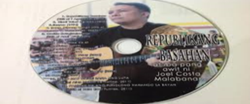
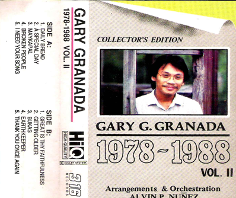

Sa usapin ng sining ay nakaagapay ang wikang Filpino, Damang-dama ng mga mamayang Pilipino ang mga awiting pinoy na tumatatak hindi lamang sa isipan bagkos maging sa puso ng mga Pilipino.
Isa ang awiting “Anak” ni Freddie Aguilar na sumikat hindi lamang sa Pilipinas kundi pati sa ibang bansa, nag karoon pa ito ng mga salin sa iba’t ibang wika sa mundo.
Dahil sa pagkahilig ng mga Pilipino sa pag-awit nagiging mabisang instrumento ito sa paghahatid ng mensahe sa madla. Ginising ng awiting "MAGKAISA"noong 1986 matapos ang mapayapang rebolusyon ng mga Pilipino laban sa pagpapatalsik sa sinasabi noong diktaduryang Pangulong Ferdinand Marcos.
Isa si Gary Granada sa mga kinikilalang kompositor sa bansa. Ang kanyang mga likha ay sumasalamin sa tunay na kalagayan ng mga Pilipino. Si Dr. Joel Malabanan ng Unibersidad ng Pilipinas ay nagsagawa ng pananaliksik hinggil sa mga awitin ni Granada.
Nakalikha siya ng mga awiting kumukorot sa puso at isip ng mga mamayang Pilipino, Dahil sa mga awitin na isinulat ni Gary Granada nakagawa si Dr. Joel Malabanan ng Unibersidad ng Pilipinas nang isang pananliksik tungkol sa awitin ni Gary Granada.
(Bahagi ng pananaliksik ni Joel Costa Malabanan)
Binary contrast o dalawahang pagtutunggali ang ipinapakita ng liriko sa awiting "Bahay" at "Manggagawa" sa pagitan ng mga mahihirap at mayayaman. Sa awiting "Bahay" ay pinagkumpara ni Gary Granada ang labinlimang mag-anak na nagsisiksikan sa isang barung-barong na sira-sira at sa isang mansyon na halos walang nakatira. Binigyang diin niya sa awit na kahit ang Maylikha ay posibleng magtaka kapag nakita ang tirahan ng mga mahihirap nating kababayan na inilarawan bilang "pinagtagpi-tagpi"
Notes: (Binary contrast -Meaning from seeing themes or elements as connotative categories of opposites. An analysis of thematic opposites in a text or artifact studies the patterns other than sequential ones in the story. Find one element, consider its symbolic theme and then look for its opposite)
Sa awiting "Manggagawa" naman ay binigyang diin ang pagiging manhid ng mga kapitalista sa karaingan ng mga manggagawa lalo pa sa usapin ng pagtataas ng kanilangsuweldo. Matindi ang sumbat ng huling saknong ng awit tagping basurang pinatungan ng bato / hindi ko maintindihan bakit ang tawag sa ganito ay bahay? Samantalang may isang panginoong may kapital/ ang nagdiwang at nagdaos ng hapunan at kabilang sa hapag ng panauhing pandangal / ang tanyag at ang banal sa ating lipunan/ halos ang bawat isa’y makapangyariha’t matagumpay/ dahilan sa isang taglay na katangian / ang matibay na loob na magsawang mabusog / habang may nangangatog sa hapdi ng tiyan.” Ganitong-ganito ang kalagayan sa pagitan ng mga manggagawang kontraktuwal sa ating lipunan at sa mga kapitalistang nagkakamal ng yaman mula sa lakas-paggawa ng manggagawa Kung mas marami sana ang gagamit ng kantang "Bahay" at "Manggagawa" sa mga guro ng paaralan ay mas mailalapit nila ang reyalidad sa kanilang mga estudyanteng ipinaghehele ng eskapismo mula sa pinagkakaabalahan nilang social network.
Ang awiting "Dam" naman ay naglalaman ng protesta sa mga development projects ng gobyerno na nagwawasak sa kapaligiran at sa pamumuhay ng mga katutubo. Sa ngalan ng huwad na kaunlaran / Ang bayan ay sa utang nadiin / At ito na ang kabayaran /Ang kanunununuang lupain / Ang mga eksperto'y nagsasaya / At nagpupuri at sumasamba / Sa wangis ng diyus-diyosan nila / Ang dambuhalang dam. Taong 1989 nalikha ang awit na halaw sa pakikipaglaban ng mga katutubo sa Cordillera na tumutol sa pagtatayo ng Chico Dam. Noong Abril 24, 1980 ay nagbuwis ng buhay si Macliing Dulag, isang lider ng mga katutubong Kalinga na pinaslang ng mga militar dahil sa pagtutol nito sa Chico Dam na wawasak sa kalikasan at sa kanilang pamumuhay. Napigil ang pagtatayo ng dam at ang kamatayan ni Macliing Dulag ay naging simbolismo ng kabayanihan at ngayon ay ipinagdiriwang bilang "Araw ng Cordillera". Ang kantang "Dam" ni Gary Granada ay hindi lamang awit na nagpapakita ng pagmamahal sa bayan kundi awit rin na nagpapakita ng pagmamahal sa kalikasan. Hanggang ngayon, ang mensahe ng awit ay patuloy pa ring nanunumbat habang walang pakundangan rin ang pagwasak sa kapaligiran kapalit ng kaunlaran. Maiuugnay naman sa kalagayan ng mga manggagawa ang nilalaman ng kantang "Hatinggabi Sa Picket line" na literal na tumatalakay sa mga manggagawang nagwewelga.Nagpapakita ng realismo ang refrain ng awit na may linyang "Hangga’t manggagawa’y nakagapos / ang welga’y hindi matatapos/ hangga’t naghahari ang pera’t baril / ng mga uring naniniil" at nagpaaalala sa pinaslang na labor leader ng Nestle na si Diosdado Fortuna noong Setyembre 22, 2005 at sa pakikibaka ng mga manggagawa ng Philippine Airlines noong Setyembre 30, 2011 Ang mga ganitong tema ng awit ay mainam na gamitin upang mamulat ang mga estudyante hinggil sa kalagayan ng mga manggagawa sa Pilipinas at hindi nalalayo sa mga akdang pampanitikan na matatagpuan sa mga panghayskul na aklat sa Filipino tulad ng kuwentong "Aklasan" ni Brigido Batungbakal, "Ang Dyanitor" ni Aurelia Vicente at "Gutom" ni Clodualdo del Mundo. Ang mga kuwentong ito, tulad ng mga awit ni Gary Granada ay repleksyong ng kalagayan ng mga mahihirap nating kababayan sa lipunan na dapat magkaroon ng puwang sa mga talakayan sa klase sa hayskul man o sa kolehiyo.
Ang mga awiting "EDSA" at "Kanser" ay kapwa inilabas ni Gary Granada noong 1989 at kasama sa album na "Ugat: Pagsamba at Pakikibaka Vol. 2" na isa sa pinakamatapang na album na kanyang inilabas. Ang liriko ng "EDSA" ay pagtuligsa sa kawalan ng pagbabago pagkatapos na mapatalsik si Marcos at mailuklok sa puwesto si Pangulong Cory Aquino. Ayon sa awit, "Ang EDSA’y tulad ng paglaya natin sa mga Kastila/ sa halagang dalawampung milyong dolyar/ sa anyo ng demokrasya ay angkop at kasyang-kasya/ ang base militar at sandatang nukleyar." Malinaw na ginamit ni Gary Granada ang kasaysayan para maikumpara sa Treaty of Paris noong 1898 ang EDSA Revolution noong 1986 na ayon sa awit ay simbolismo ng huwad na kalayaan. Sa panitikan, ganito rin ang tema ng kuwentong "Ugat" ni Genoveva Edroza Matute kung saan ang pangunahing karakter na si Lolo Tasio ay nais nang umalis ng Pilipinas nang mapagtanto niya na wala namang naganap na pagbabago sa kalagayan ng bansa pagkatapos ng EDSA Revolution. Samantala, ang kantang "Kanser" naman ay tumatalakay sa sakit ng lipunan partikular sa pagsasamantala ng mga mayayaman sa mahihirap na ang salosyon ay "totoong rebolusyon".
Lumilitaw na ang awit ay bahagi rin ng pagtuligsa sa huwad na kalayaang natamo ng sambayanan matapos na mapatalsik ang diktaturya ni Marcos. Ang awiting "Pablong Propitaryo" ay sinulat ng Palanca awardee na si Tom Agulto ngunit nilapatan ng musika at inawit ni Gary Granada. Tinalakay sa awit ang abusadong panginoong maylupa, pulitiko at propitaryo na si Pablo. Kagaya sa Kabanata IV ng "El Filibusterismo" kung saan pinaslang ang paring si Padre Clemente na kumamkam ng lupa ni Kabesang Tales, binaril rin at napatay ang mapagsamantalang si Pablong Propitaryo: "Tingga ay naglagos sa dibdib, sa utak/ sinong walang puso kaya ang umutas?" Ang ganitong eksena ay nagtataglay ng element ng Marxismo kung saan ang dahas ang tanging solusyon upang wakasan ang pagsasamantala. Ganito ring solusyon ang ginamit ni Efren Abueg sa kanyang kuwentong "Ang Kamatayan ni Tiyo Samuel" kung saan ang balisong ni Felipe ang kumitil sa mapagsamantalang si Tiyo Samuel. Sa konteksto ng lipunang Pilipino, nananatiling pinakamatandang kilusan sa Asya ang armadong pakikibaka ng New People’s Army sapagkat tanging dahas lang ang pinaniniwalaang nalalabing paraan sa mga magsasaka at mahihirap nating kababayan na kasapi nito. Ilan lamang yan sa mga bahagi ng Pananaliksik na ginawa ni Dr. Joel Malaban, Pinapakita sa kanyang pananaliksik kung gaano kalakas ang kapangyarihan ng isang awitin at kung ano ang nagiging dulot nito sa mga nakikinig.
Ang musika ay nakakabit na sa kultura at pamumuhay ng mga Pilipino, nagiging susi rin ito sa pag-unlad ng kanilang kaisipan at pakikibaka sa buhay.
Isa lamang si Gary Granada sa maraming mkopositor ng Pilipinas. Na maraming gustong sabihin sa bayan sa pamamagitan ng musika.